삼성자산운용 · 미래내일 일경험 · 2026.06 · 3인 팀
ETF 투자 정석 가이드라인
처음 ETF를 시작하는 사람을 위한 가이드북을 만들었습니다.
자세히 보기 →YEJI JEONG / PORTFOLIO
포트폴리오를 보려면 비밀번호를 입력해 주세요.
매일 아침 채용공고 1,200여 건을 모아 LLM이 나와의 적합도를 채점합니다. 클릭해서 자세히 보기
도구Node.js로 11개 채용 사이트의 API와 HTML을 파싱하는 수집기를 만들고, gpt-4o-mini가 이력 프로필 대비 적합도를 0~100점으로 채점하도록 연결했습니다. 결과는 Next.js 대시보드에서 보고, macOS launchd로 매일 아침 자동 실행합니다.
결과물공고 1,200여 건을 매일 수집·채점하는 파이프라인과 대시보드를 만들어 실제 이직 준비에 쓰고 있습니다. 계약직 자동 필터링, 기업별 연봉·복지 점수화까지 포함했습니다.
배운 것처음에는 프로필에 경력을 뭉뚱그려 적었더니 LLM이 모든 직무를 6년차로 판단했습니다. 증권 6년·경영지원 3개월·AI 1년처럼 도메인별로 연차를 쪼개 명시하고 나서야 점수가 실제 감각과 맞았고, 프롬프트를 다듬는 것보다 입력 데이터를 어떻게 구조화하느냐가 결과를 좌우한다는 것을 배웠습니다.
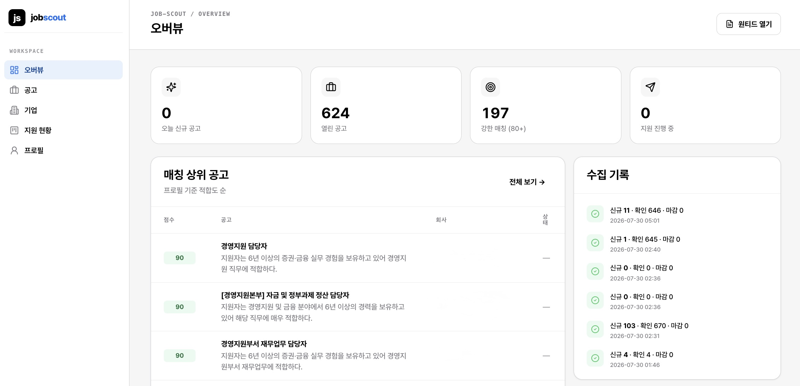
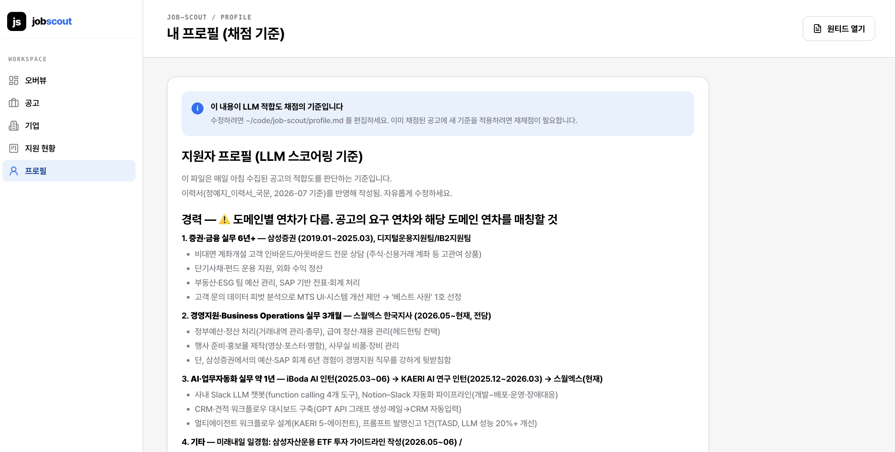
연구비 판정 분류기·그래프 생성 AI·사내 챗봇을 만들어 매일 운영합니다. 클릭해서 자세히 보기
도구Next.js와 Supabase로 사내 대시보드를 만들고, LLM API를 붙여 세 가지 기능을 올렸습니다. 정부 R&D(TIPS) 연구비 규정을 학습해 지출의 예산 인정 여부를 판정하는 분류기, 회사 디자인 시스템에 맞는 통계 그래프를 생성하는 서비스, 노션·사내 DB·웹검색을 연결한 챗봇입니다.
결과물서버리스로 시작한 자동화를 사내 상시 운영 체계로 옮겨 매일 무중단으로 돌리고 있습니다. 기획부터 구현·배포·장애 대응까지 담당했습니다.
배운 것처음에는 분류 정확도를 올리는 데 매달렸는데, 실제로 쓰이려면 틀렸을 때 사람이 곧바로 고칠 수 있는지가 더 중요했습니다. AI는 분류를 제안만 하고 확정은 사람이 하도록 바꾼 뒤에야 동료들이 실제로 쓰기 시작했습니다.
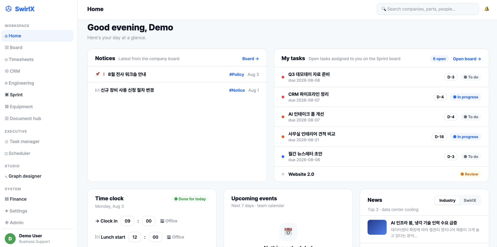
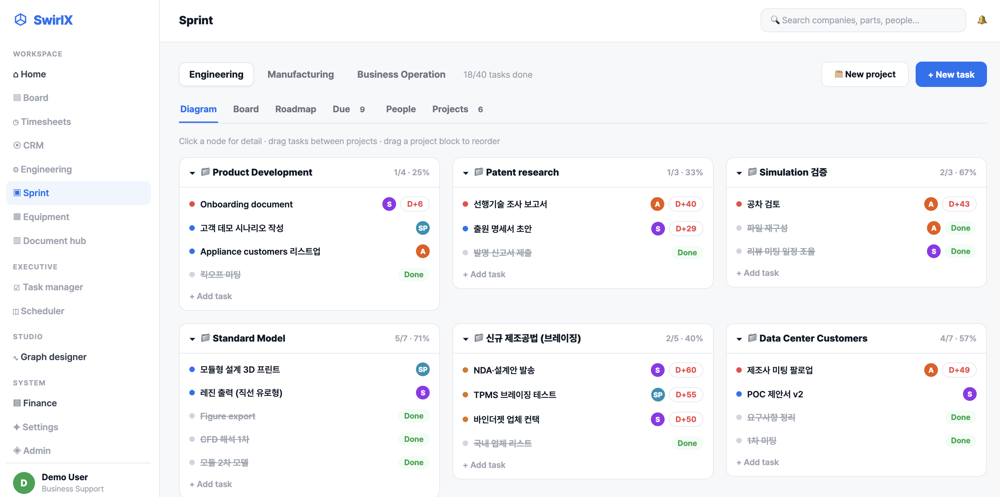
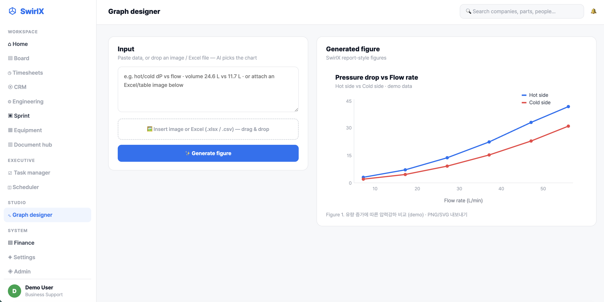
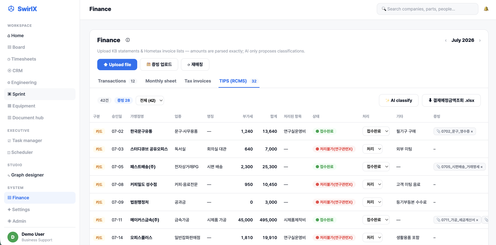
외부 AI 모델을 기관에서 쓸 수 있는지 검증해 리포트로 정리했습니다. 클릭해서 자세히 보기
도구bioRxiv에 공개된 논문과 코드를 읽고 아키텍처를 분석한 뒤, 논문이 보고한 성능 지표(Spearman ρ)와 GPU·의존성 요구사항을 항목별로 확인했습니다.
결과물"지금 쓸 수 있는 기능"과 "도입 시 제약"을 나눠 대비시킨 의사결정용 리포트를 작성했습니다.
배운 것논문의 성능 수치가 좋아도 우리 환경에서 재현 가능한지는 별개 문제였습니다. 도입 판단에는 모델 성능만큼 인프라 요구사항과 유지보수 부담이 크게 작용한다는 것을 배웠습니다.
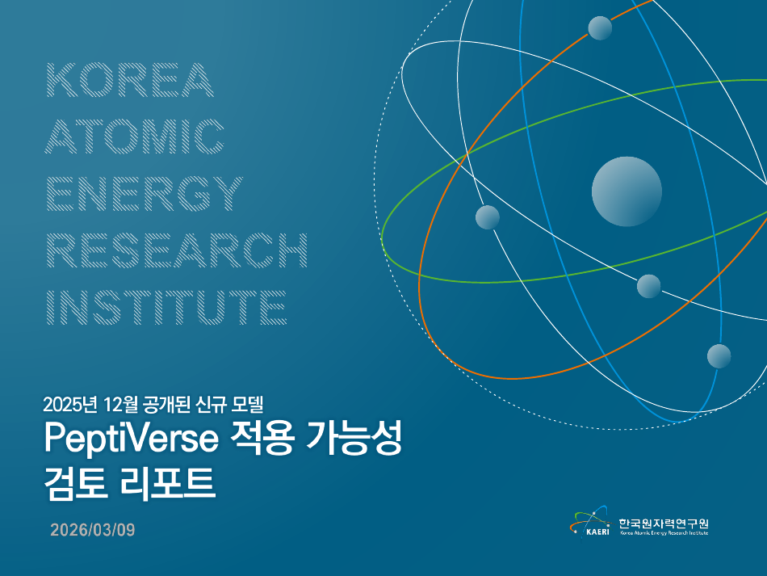
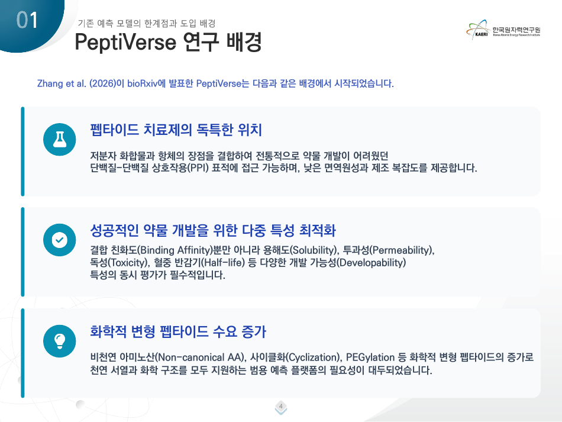
LLM 에이전트 5개가 협업해 신약 후보를 자동으로 스크리닝합니다. 클릭해서 자세히 보기
도구Planner·QC&Ranker·DiversityManager·Critic·Reporter 5개 에이전트가 협업하는 워크플로우를 Python으로 설계하고, RFdiffusion·ProteinMPNN·ESMFold·PyRosetta를 단계별로 연결했습니다.
결과물펩타이드 후보를 생성하고 구조 예측·도킹·결합에너지 계산까지 자동으로 돌린 뒤 순위를 매기는 파이프라인을 만들었습니다.
배운 것에이전트를 늘리는 것보다 각 단계의 통과 기준을 숫자로 못 박는 게 결과 품질을 좌우했습니다. 기준이 모호하면 에이전트가 그럴듯한 결론을 만들어내는 것을 보고, 정량 게이트를 먼저 설계하게 됐습니다.
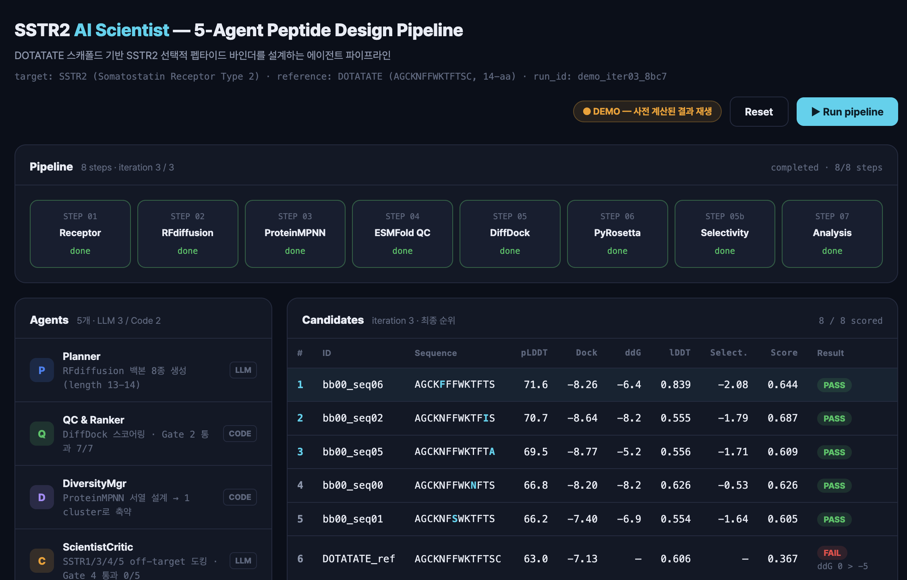
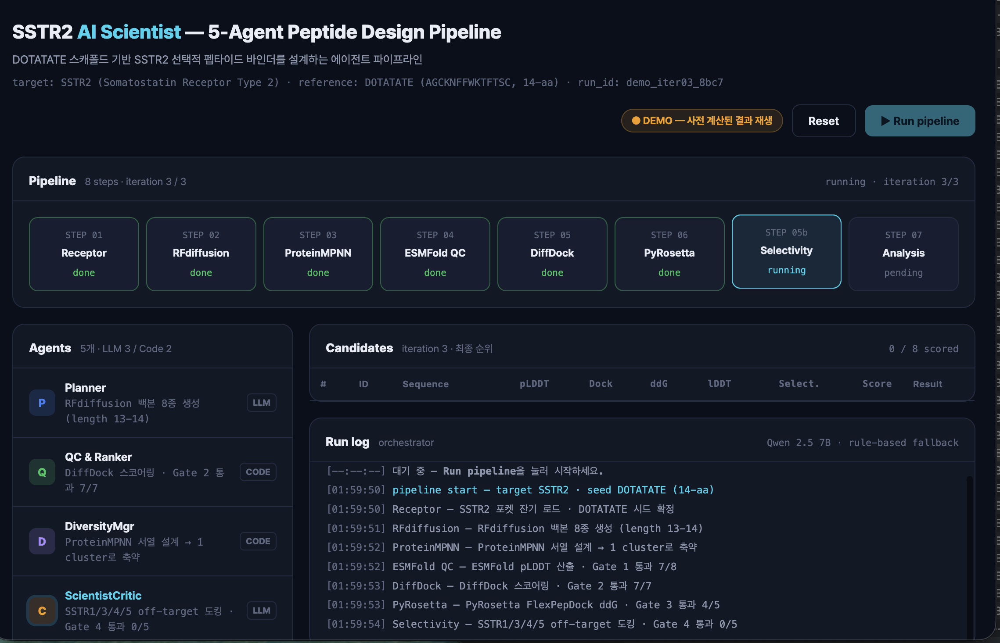
시계열 모델 10여 개를 비교하고 이상 데이터의 원인을 규명했습니다. 클릭해서 자세히 보기
도구R로 한강 수계 4년치 수질·기상·수문 데이터를 정리하고, 변동계수와 LASSO·VIF로 28개 변수를 19개로 추린 뒤 Mean·ARIMA부터 RandomForest·XGBoost·LSTM까지 비교했습니다.
결과물변수 선정 근거와 모델별 성능 비교를 담은 보고서를 작성했고, 하류 취수 지점의 탁도를 예측하는 모델을 완성했습니다.
배운 것머신러닝 모델이 단순 평균 모델보다 못 나오자 데이터를 처음부터 다시 봤고, 잘못 들어간 더미 값이 원인이었습니다. 성능이 이상할 때 모델을 바꾸기 전에 데이터를 먼저 의심하는 습관을 여기서 얻었습니다.
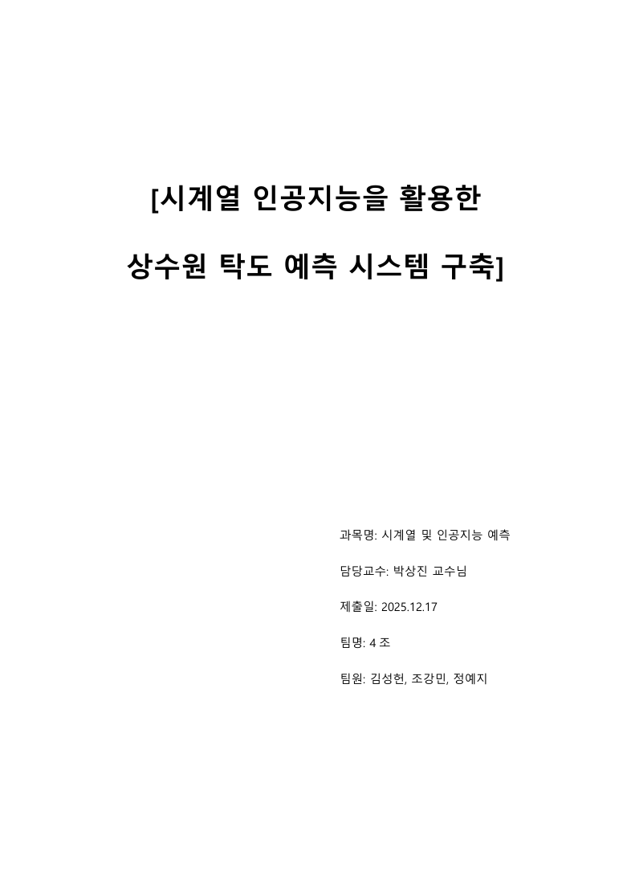
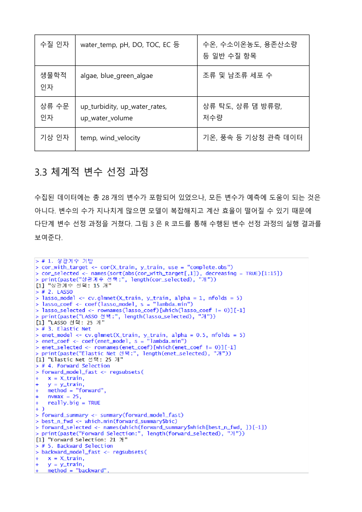
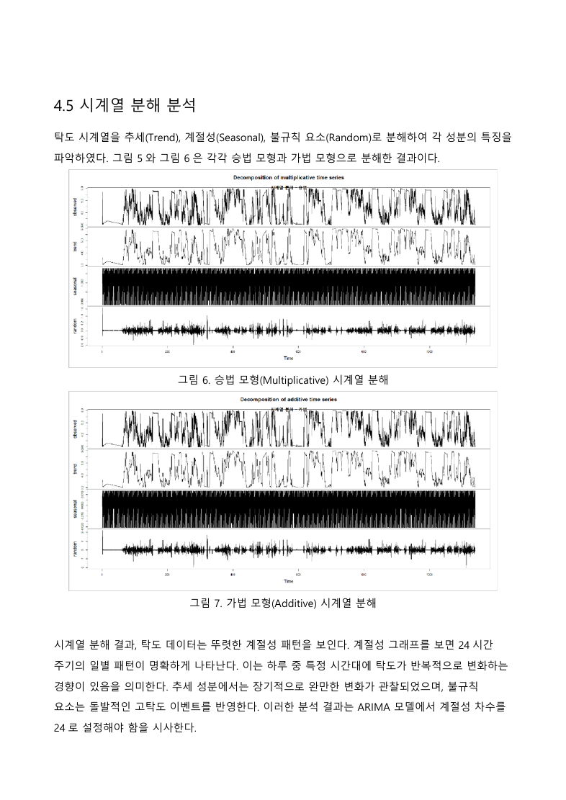
프롬프트 실험 50여 회로 감성분석 F1을 약 31.6% 개선했습니다. 클릭해서 자세히 보기
도구리뷰 텍스트에서 Target·Aspect·Sentiment를 뽑는 과제를 6개 차원으로 나눠, GPT 기반으로 약 50개 프롬프트 버전을 실험하고 결과를 엑셀에 기록해 F1으로 비교했습니다.
결과물7단계 논리 추론 프롬프트를 설계해 F1을 0.4651에서 0.6120으로 올렸고, 이 방법론으로 발명신고를 마쳤습니다.
배운 것틀린 데이터를 하나씩 열어보는 게 가장 빨랐습니다. 감탄사가 많은 문장에 누락이 몰린다는 패턴을 찾고 나서야 점수가 뛰었고, 실험은 기록해 두어야 비교가 된다는 것도 배웠습니다.
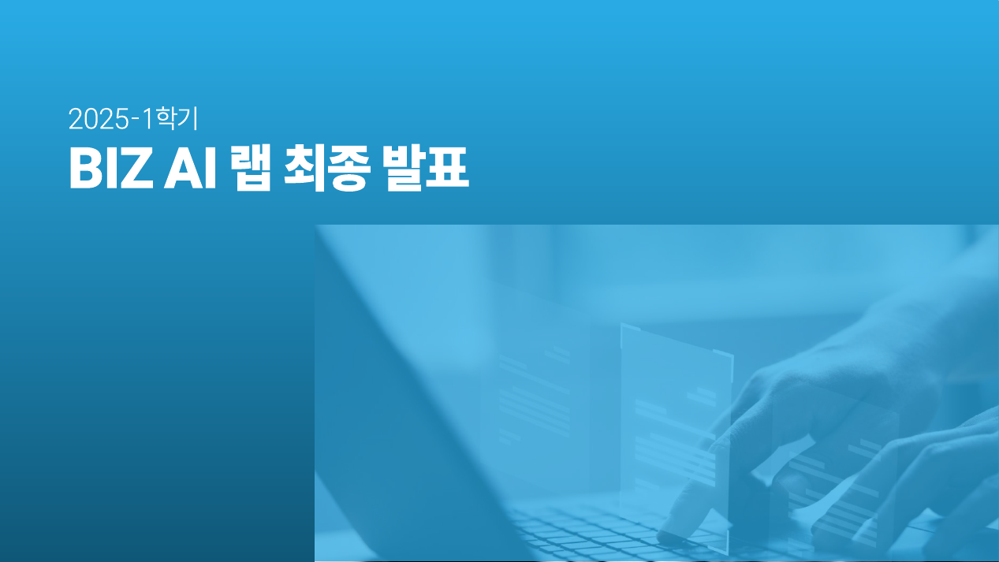
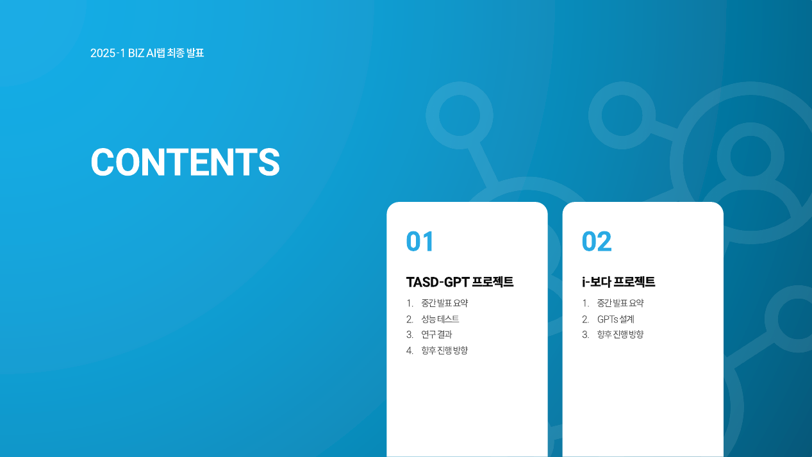
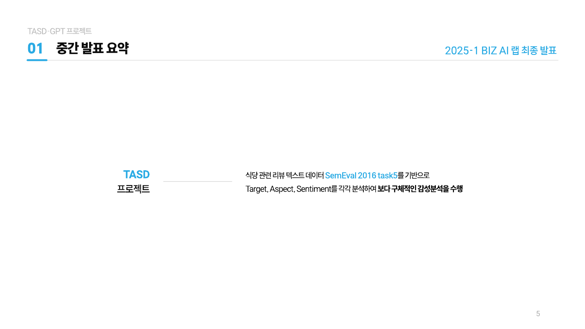
처음 ETF를 시작하는 사람을 위한 가이드북을 만들었습니다.
자세히 보기 →
SNS의 AI 생성 저품질 콘텐츠를 가려주는 앱을 기획했습니다.
자세히 보기 →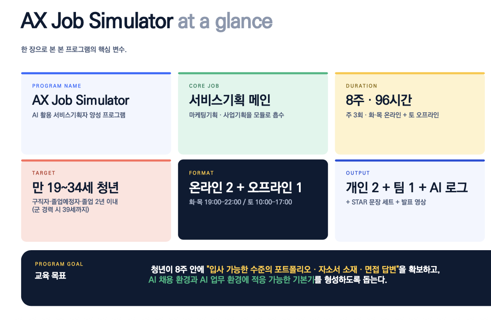
AI 시대 청년 인재를 기르는 8주 부트캠프를 단독으로 기획했습니다.
자세히 보기 →
물건으로 개인의 취향과 정체성을 조명하는 전시를 기획했습니다.
자세히 보기 →
초·중등 교사를 위한 미술 수업 콘텐츠 큐레이션 플랫폼을 기획했습니다.
자세히 보기 →
빨간 모자 이야기로 정보 판별을 배우는 교육용 게임 월드를 만들었습니다.
자세히 보기 →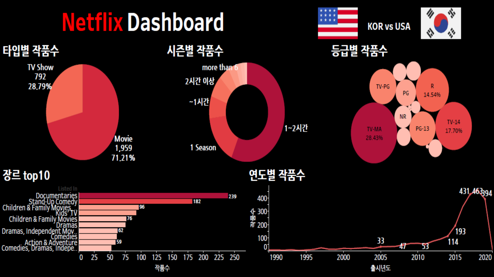
콘텐츠 제작자를 위한 넷플릭스 데이터 대시보드를 만들었습니다.
자세히 보기 →
AI가 하루의 뉴스를 모아 다시 써주는 서비스를 팀과 기획했습니다.
자세히 보기 →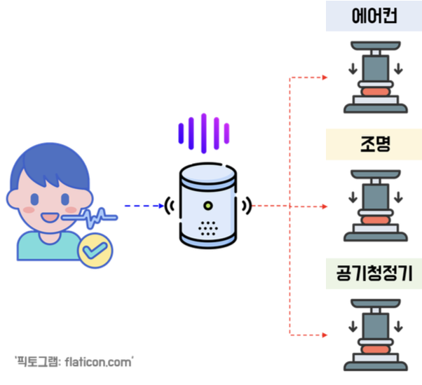
버튼을 대신 눌러주는 음성 제어 기기의 사업계획서를 썼습니다.
자세히 보기 →사내 LLM 챗봇·업무 자동화 파이프라인·CRM 대시보드 구축과 한국지사 Business Operation(정부예산·정산, 급여·채용, 총무) 전담.
시장 리서치·ETF 트렌드 분석을 바탕으로 투자 가이드북 공동 제작.
멀티에이전트 신약 후보 스크리닝 워크플로우 구축, 외부 AI 모델 도입 타당성 리뷰.
글로벌 금융 실무 기초와 해외 금융기관의 운용 관점을 영어로 학습.
현지 학생 대상 교육·문화 교류 프로그램을 기획하고 운영.
풀타임 재직과 병행.
재학 중 Biz&AI Lab 연구활동, 창업동아리 NexIoT 창립, 블록체인 학회 HYBLOCK 활동.
비대면 고객 응대(연금·ISA·신용담보)와 전산 개선 제안(디지털부문 종합평가 최우수), 단기사채·펀드 운용 지원, 외화 정산, 부동산·ESG 예산 관리 및 SAP 회계 처리.
영어 몰입 환경에서 1년간 수학.
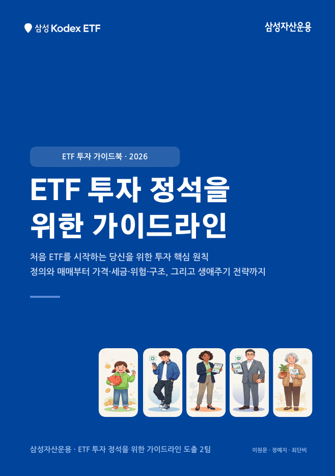
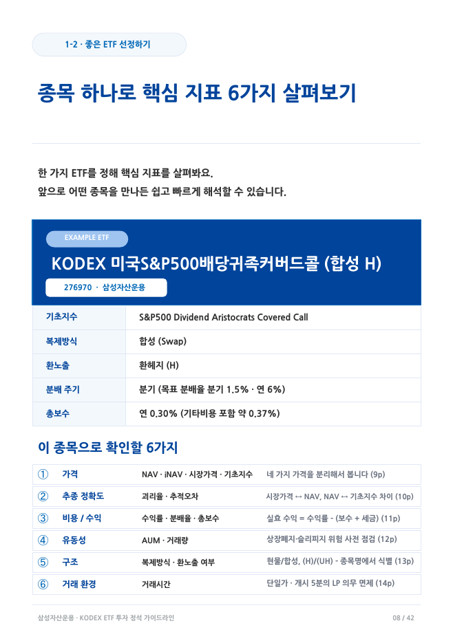
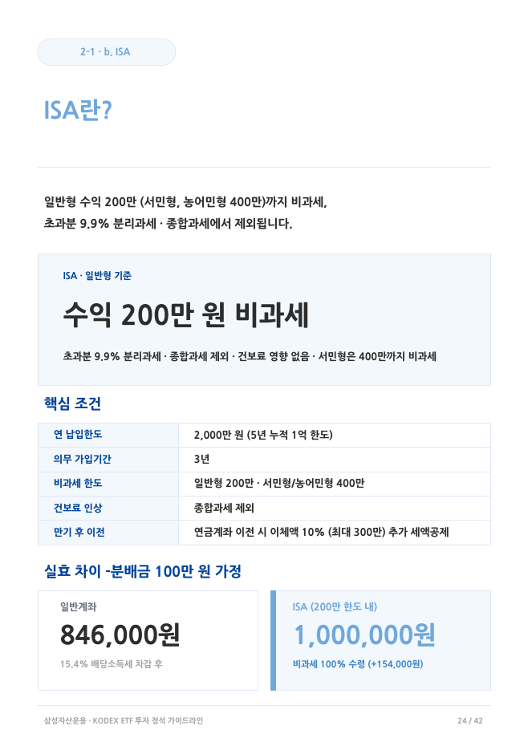
도구ETF 시장 자료와 상품 공시를 조사해 목차를 짜고, 정의·분류부터 NAV와 괴리율, 추적오차, 보수, 과세까지 항목별로 정리했습니다. 브랜드 가이드에 맞춰 편집했습니다.
결과물투자 판단 기준과 생애주기별 포트폴리오 전략을 담은 가이드북을 팀과 함께 완성했습니다.
배운 것같은 상품도 읽는 사람의 이해도에 따라 필요한 설명이 달랐습니다. 정보를 다 넣기보다 무엇을 기준으로 고를지 알려주는 편이 실제로 도움이 된다는 것을 배웠습니다.
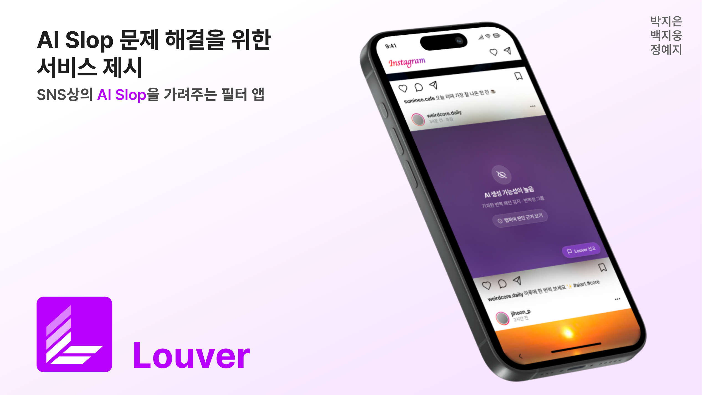
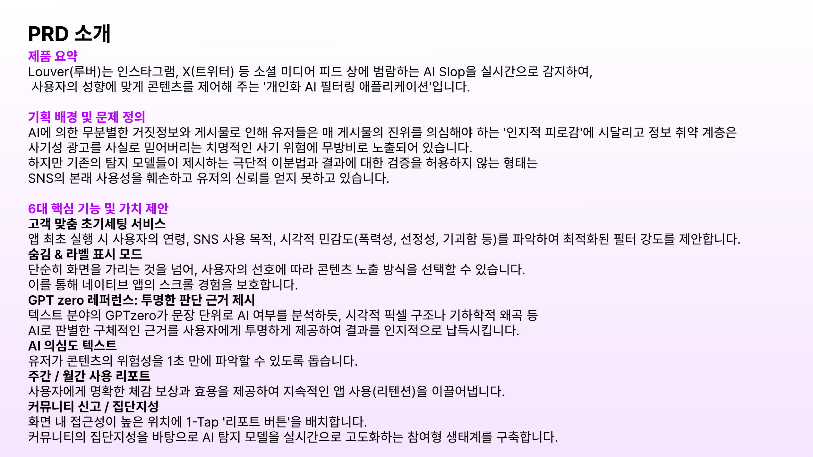
도구AI Slop 확산에 관한 기사와 통계를 근거로 문제를 정의하고, 페르소나와 사용자 여정을 그린 뒤 KPI와 수익 모델까지 설계했습니다. 화면은 프로토타입으로 구현했습니다.
결과물배경 조사부터 문제 정의, 서비스 구조, 프로토타입까지 담은 기획안을 만들었습니다.
배운 것기존 AI 디텍터가 왜 안 쓰이는지를 먼저 따져보니, 판별 정확도보다 사용자가 판단을 맡길 만큼 흐름에 자연스럽게 붙는지가 관건이었습니다. 기술보다 붙이는 위치가 중요하다는 것을 배웠습니다.
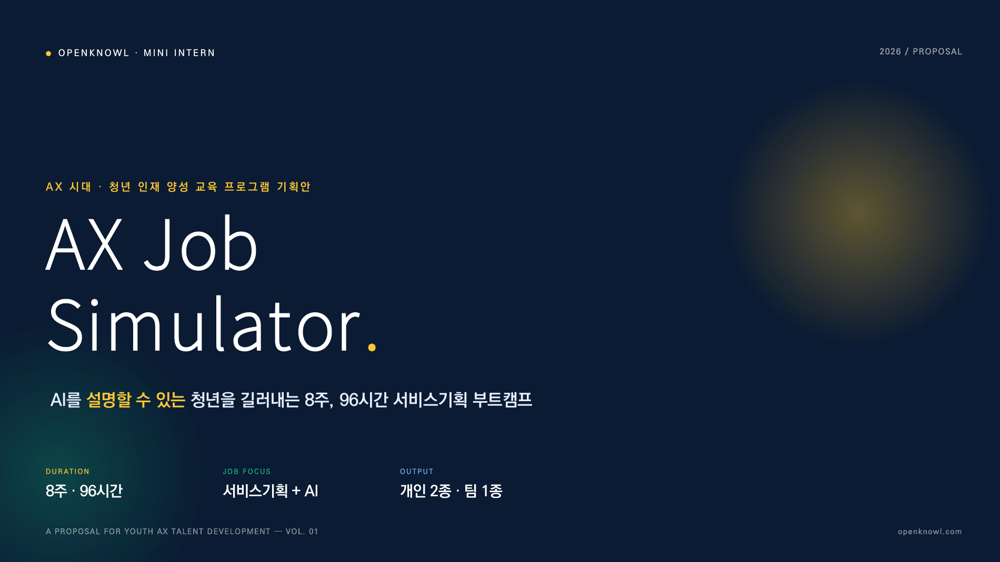
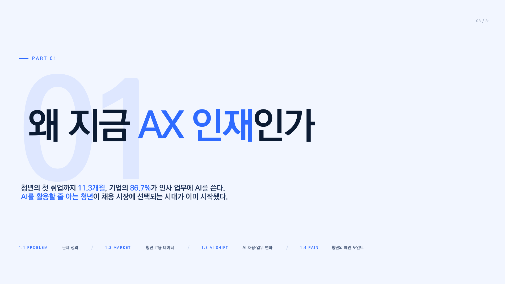
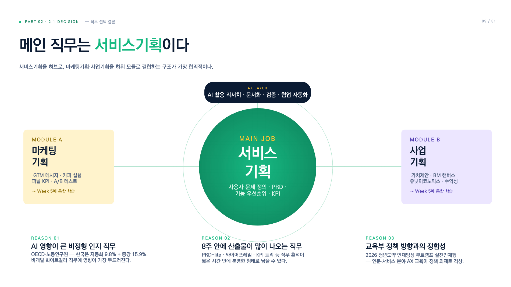
도구청년 고용 통계와 AI 채용·업무 변화 자료로 문제를 규정하고, 서비스기획 직무를 선택한 근거를 정리한 뒤 8주 96시간 커리큘럼과 운영 실행안을 설계했습니다.
결과물왜 지금 AX 인재인가부터 실행 방안까지 5부로 구성한 기획서를 혼자 작성했습니다.
배운 것교육 프로그램은 무엇을 가르치느냐보다 끝나고 무엇이 남는지가 설득 포인트였습니다. 개인 2종·팀 1종이라는 산출물을 먼저 정하고 커리큘럼을 거꾸로 짜니 기획이 단단해졌습니다.
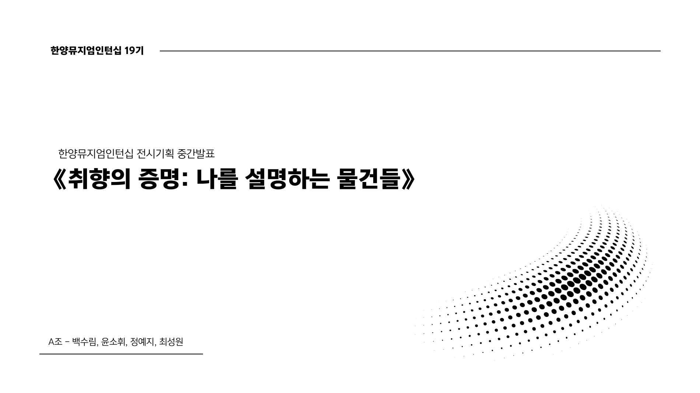
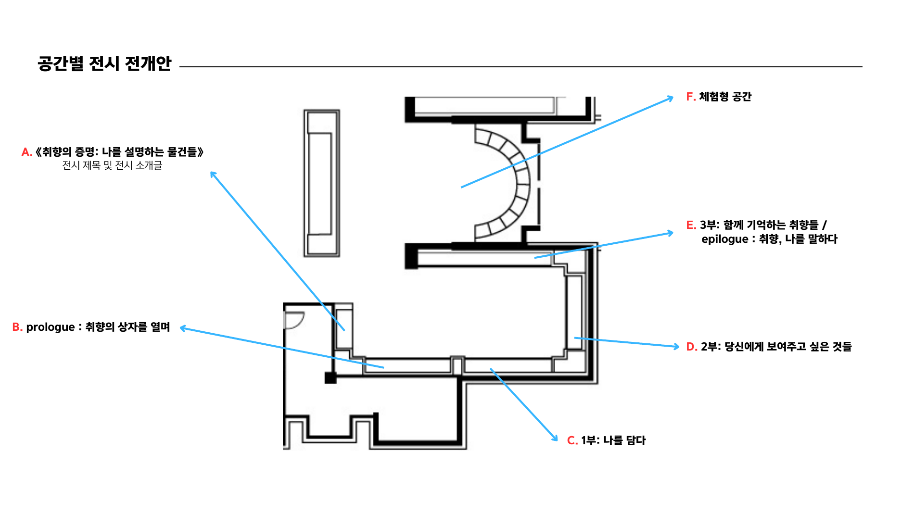
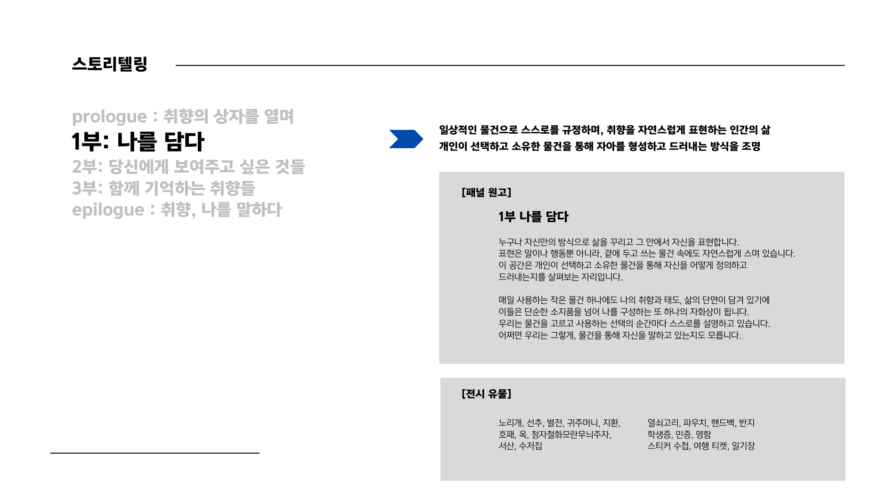
도구전시 주제와 목표를 정하고 프롤로그부터 3부·에필로그까지 스토리텔링 흐름을 짠 뒤, 공간별 전개안과 체험형 공간, 전시 디자인을 팀과 함께 구성했습니다.
결과물"취향의 내면화 → 표현화 → 공통화"로 이어지는 관람 동선과 체험 공간을 담은 전시 기획안을 만들어 중간발표했습니다.
배운 것관람객이 무엇을 보느냐보다 어떤 순서로 느끼게 할지가 기획의 핵심이었습니다. 공간을 감정의 흐름으로 설계하는 방식을 처음 경험했습니다.
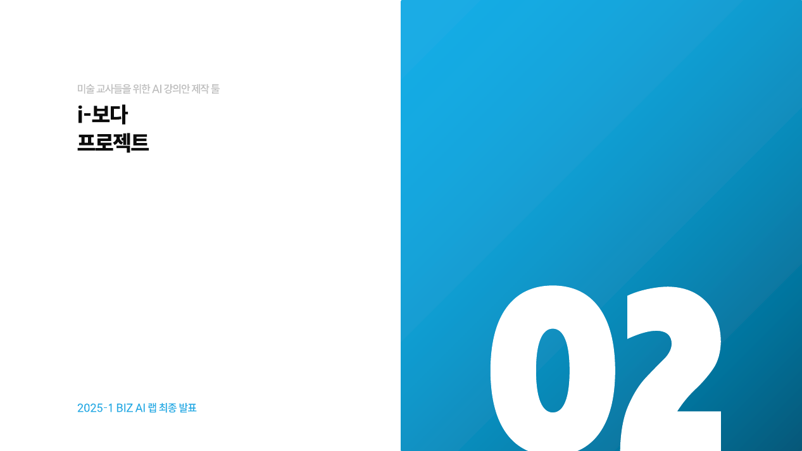
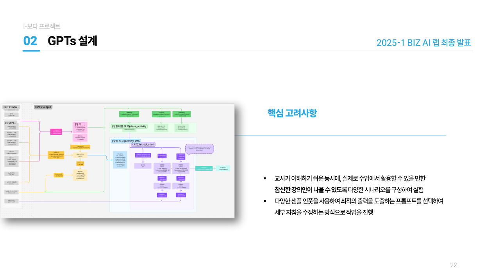
도구교사가 수업을 준비하는 과정을 따라가며 필요한 기능을 정리하고, 콘텐츠를 분류·추천하는 구조와 화면 흐름을 설계했습니다.
결과물서비스 대상과 핵심 기능, 화면 구성을 담은 기획안을 만들었습니다.
배운 것사용자가 교사라는 점 때문에 "좋은 콘텐츠"보다 "수업 시간에 바로 쓸 수 있는 형태인지"가 기준이 됐습니다. 기획은 대상을 좁힐수록 판단이 쉬워진다는 것을 배웠습니다.
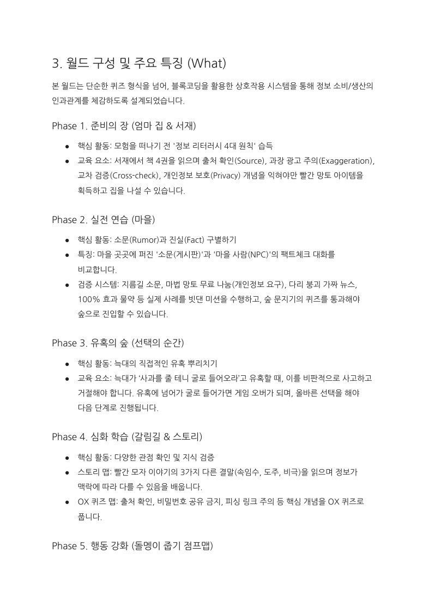
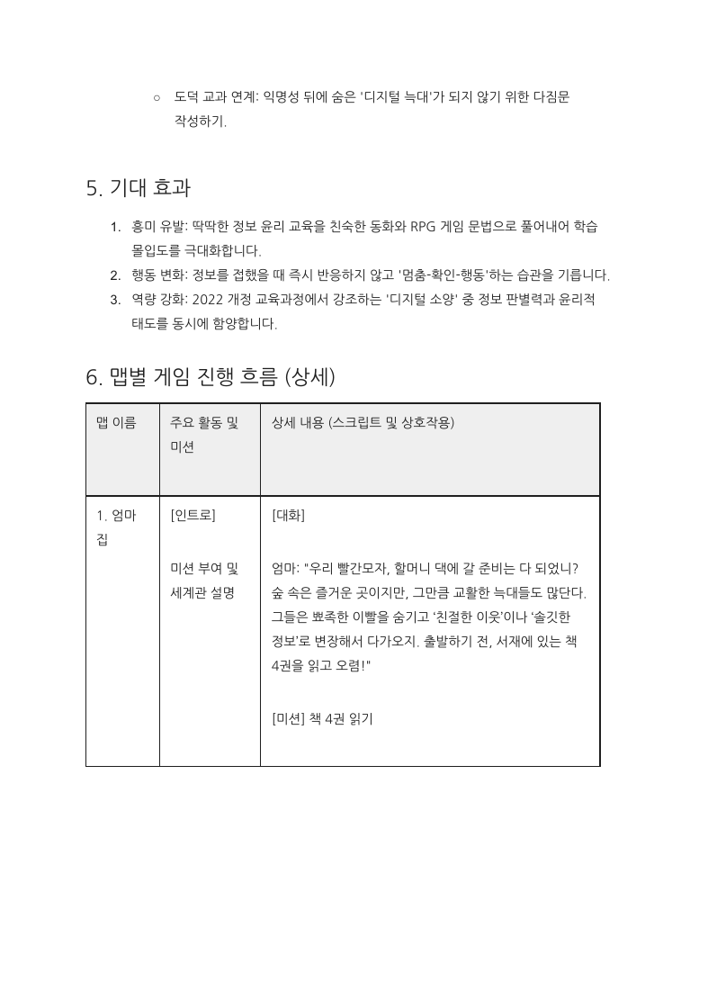
도구메이플스토리 월드의 블록코딩으로 게임을 제작했습니다. 디지털 세상을 숲으로, 가짜 뉴스와 피싱을 늑대의 유혹으로 치환해 스토리를 짜고, 출처 확인·과장 광고·교차 검증·개인정보 보호 4대 원칙을 단계별 퀘스트에 넣었습니다.
결과물초등 고학년 대상 교육 월드와 소개서를 완성해 수업에 활용했습니다.
배운 것이론으로 가르칠 때보다 아이들이 직접 속아보고 검증하게 했을 때 반응이 달랐습니다. 교육은 설명하는 것보다 경험하게 하는 설계가 중요하다는 것을 배웠습니다.
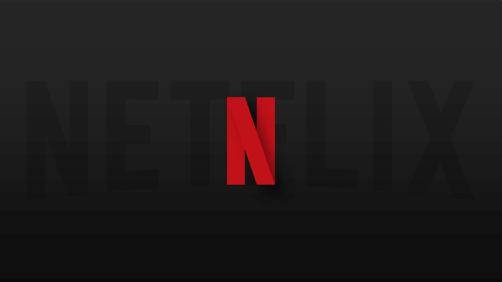
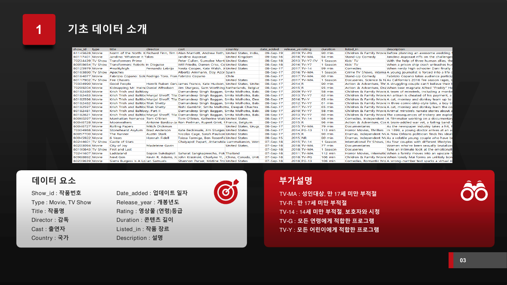
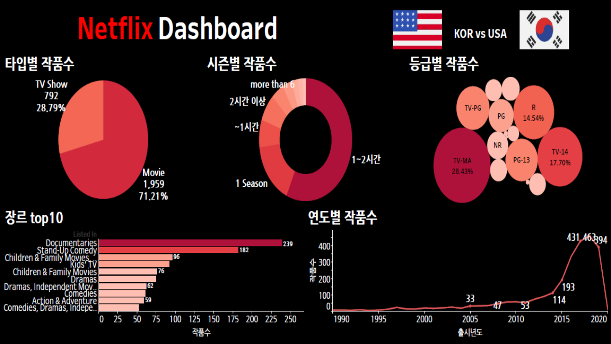
도구넷플릭스 공개 데이터셋의 장르·등급·개봉연도·국가 항목을 정리하고, 콘텐츠 기획자가 궁금해할 질문을 기준으로 그래프를 배치했습니다. 비중이 낮을수록 명도를 높이는 방식으로 중요도를 시각화했습니다.
결과물제작자·분석가·마케터가 각각 참고할 수 있도록 인사이트별로 구성한 대시보드를 만들었습니다.
배운 것그래프를 많이 그리는 것보다 누가 무엇을 결정하려고 보는지를 먼저 정하는 게 중요했습니다. 대상을 정하니 어떤 그래프를 뺄지가 분명해졌습니다.
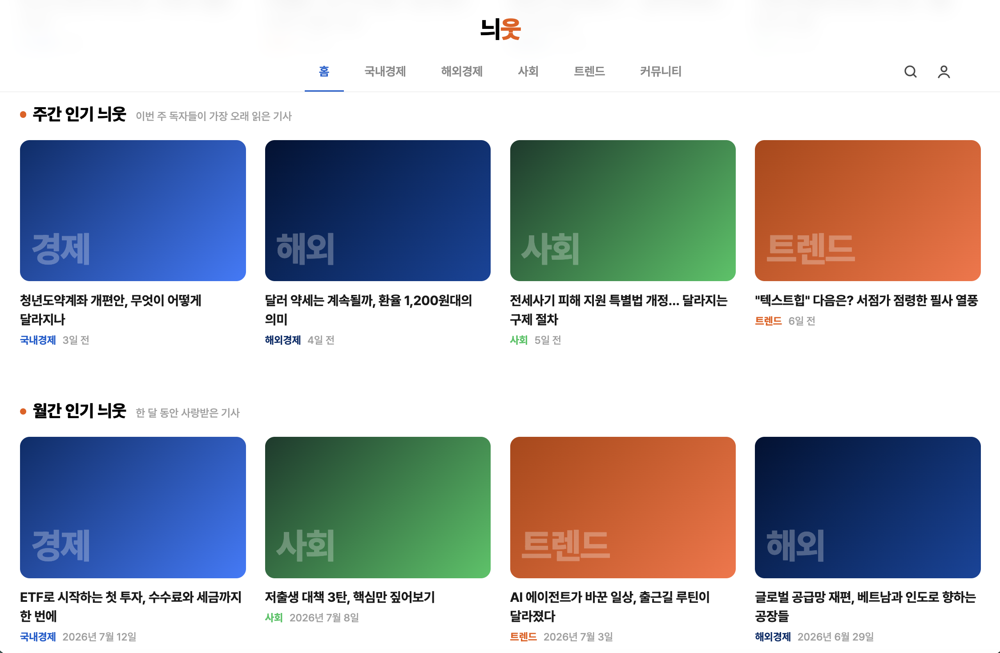
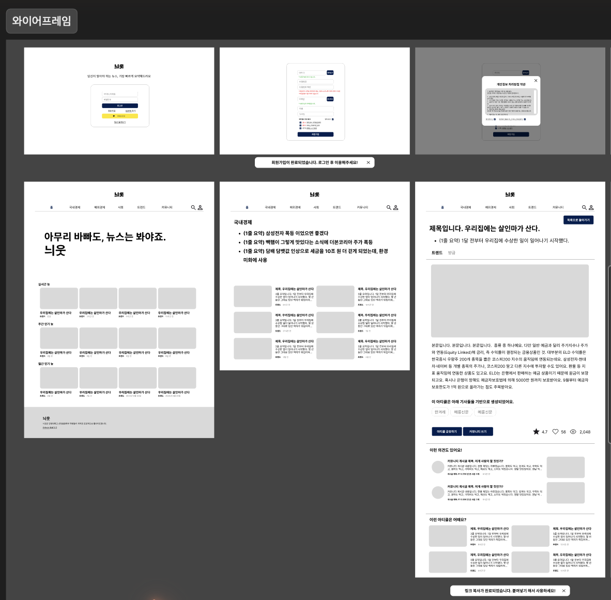
도구Figma로 홈·카테고리·검색 화면의 와이어프레임과 디자인 시스템(컬러 스케일·타이포)을 만들고, 뉴스 수집부터 클러스터링, 기사 생성으로 이어지는 서비스 구조를 팀과 정리했습니다.
결과물"아무리 바빠도, 뉴스는 봐야죠"를 콘셉트로 한 화면 설계와 디자인 시스템, 세 줄 요약 기능 구조를 만들었습니다.
배운 것디자인 시스템을 먼저 정해두니 화면이 늘어나도 팀원끼리 의견이 갈리지 않았습니다. 협업에서는 결과물보다 기준을 먼저 합의하는 게 빠르다는 것을 배웠습니다.
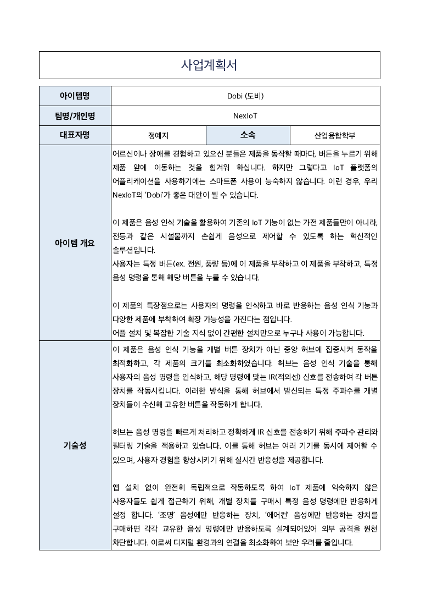
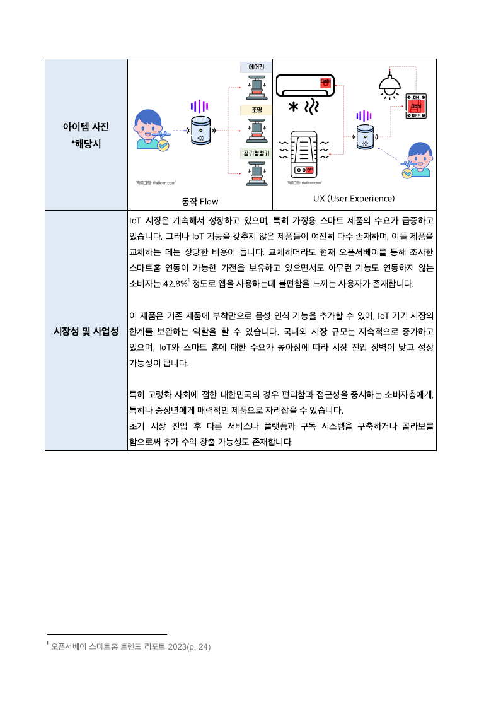
도구어르신과 장애가 있는 분들이 가전 버튼을 누르기 위해 이동해야 하는 불편에서 출발해, 음성 인식 허브가 IR 신호로 개별 버튼 장치를 작동시키는 구조를 설계하고 사업계획서로 정리했습니다.
결과물아이템 개요·기술성·UX 동작 흐름을 담은 사업계획서를 작성했습니다.
배운 것앱 설치가 필요 없어야 한다는 조건 하나가 기술 구조 전체를 바꿨습니다. 사용자의 제약에서 출발하면 만들 것이 저절로 좁혀진다는 것을 배웠습니다.